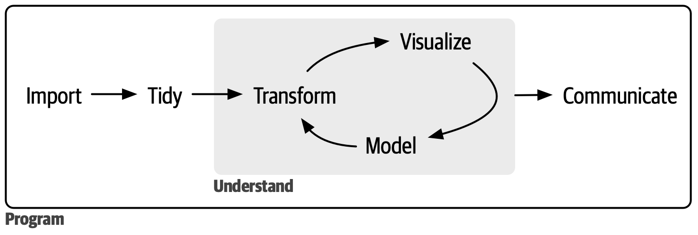
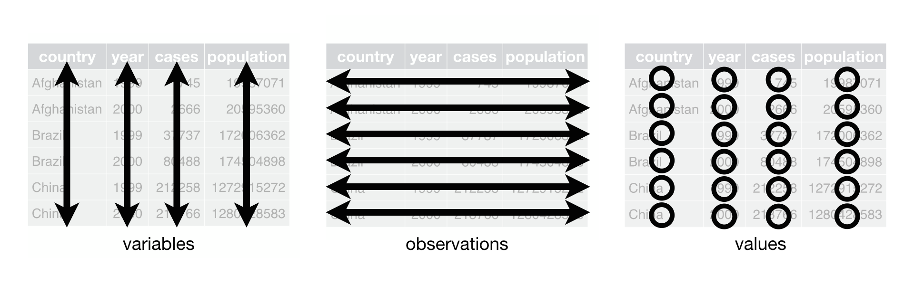
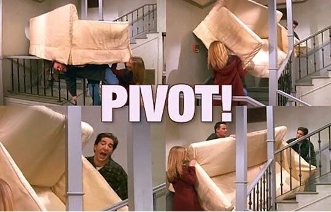
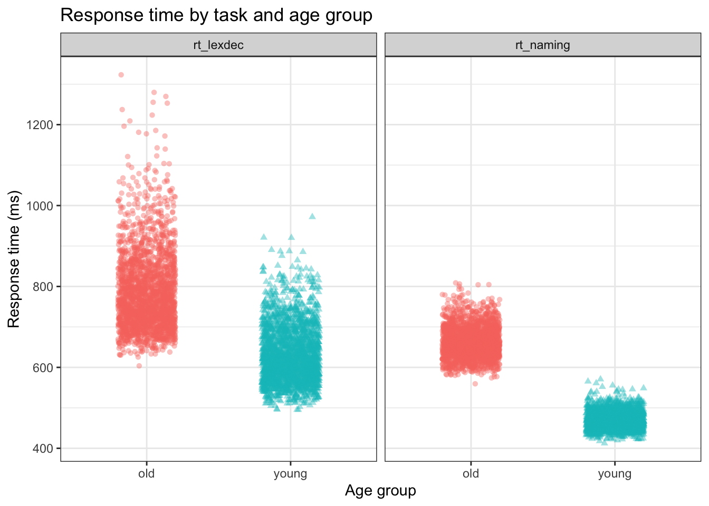

pacman::p_load(tidyverse,
here,
janitor)Data Wrangling 2
Datenbereinigung (Data tidying)
Learning objectives
Today we will learn…
- about wide versus long data
- how to make wide data longer
- how to make long data wider
Resources
The suggested resources for this topic are Chapter 6 (Data tidying) in @wickham_r_2023, and Chapter 8 (Data tidying) in @nordmann_applied_2022.
Review
In the last chapter we learned about descriptive statistics, specifically measures of central tendency (mean, median, mode) and dispersion (range, standard deviation). We also saw how to compute these values with base R (e.g., mean(), sd()) and the tidyverse (e.g., summarise()), and by groups (summarise(.by = )).
In this chapter we’ll review the concept of tidy data, and see how to organise and re-arrange our data so that it is tidy.
Set-up
We’ll need the packages tidyverse, here, and janitor.
We’ll use the languageR_english.csv dataset (in daten folder).
df_eng <- read_csv(here("daten", "languageR_english.csv")) |>
clean_names() |>
arrange(word) |>
rename(
rt_lexdec = r_tlexdec,
rt_naming = r_tnaming
)Tidy workflow
Figure 1 shows an overview of the typical data science process, whereby we import our data, tidy it, then work through a cycle of transforming, visualising, and modelling before finally communicating your findings.

We’ve already seen how to import our data (readr::read_csv), transform (dplyr package), and visualise (ggplot package) data. But we’ve only seen tidy data so far, so we haven’t needed to perform the ‘tidy’ step.
Tidy data
The same data can be representing multiple ways. The datasets below all show the same values of four variables: country, year, popuplation, and number of tuberculosis cases. Each dataset organises the values differently. Take a moment to consider the different options. Which is easiest to read?
| country | year | cases | population |
|---|---|---|---|
| Afghanistan | 1999 | 745 | 19987071 |
| Afghanistan | 2000 | 2666 | 20595360 |
| Brazil | 1999 | 37737 | 172006362 |
| Brazil | 2000 | 80488 | 174504898 |
| China | 1999 | 212258 | 1272915272 |
| China | 2000 | 213766 | 1280428583 |
| country | year | type | count |
|---|---|---|---|
| Afghanistan | 1999 | cases | 745 |
| Afghanistan | 1999 | population | 19987071 |
| Afghanistan | 2000 | cases | 2666 |
| Afghanistan | 2000 | population | 20595360 |
| Brazil | 1999 | cases | 37737 |
| Brazil | 1999 | population | 172006362 |
| Brazil | 2000 | cases | 80488 |
| Brazil | 2000 | population | 174504898 |
| China | 1999 | cases | 212258 |
| China | 1999 | population | 1272915272 |
| China | 2000 | cases | 213766 |
| China | 2000 | population | 1280428583 |
| country | year | rate |
|---|---|---|
| Afghanistan | 1999 | 745/19987071 |
| Afghanistan | 2000 | 2666/20595360 |
| Brazil | 1999 | 37737/172006362 |
| Brazil | 2000 | 80488/174504898 |
| China | 1999 | 212258/1272915272 |
| China | 2000 | 213766/1280428583 |
You likely found Table 1 easiest to read. This is because it follows the three rules for tidy data (visualised in Figure 2):
- Each variable is a column, each column is a variable
- Each observation is a row, each row is an observation
- Each value is a cell, each cell is a single value

In Table 1, each column represents a variable: country, year, population and case. Each row represents a single observation: a country in a given year. And lastly, each cell contained a single value.
Why tidy data?
“Happy families are all alike; every unhappy family is unhappy in its own way.” — Leo Tolstoy
“Tidy datasets are all alike, but every untidy dataset is untidy in its own way.” — Hadley Wickham
Once you have tidy data, you’ll spend less time trying to get your data in the right shape to do what you want. Data tidying requires some work up front, but is helpful in the long run.
There are two main advantages to working with tidy data:
- working with a consistent data structure allows us to adopt conventions
- since tidy data is the generally agreed upon data structure, conventions are built on the assumption of this structure
- so tools have an underlying uniformity
R’s vectorised nature can shine- most built-in R funtions work with vector values (and columns are essentially vectors)
- all packages in the
tidyverseare designed to work with tidy data (e.g.,ggplot2anddplyr)
Review: Vectors
Vectors are the most basic data object type in R. A vector contains data of the same type, and is essentially a list. You can create a vector using the c() function, for example.
vector1 <- c(2, 3, 4, 6, 7)
vector2 <- c(2, 3, 4, 6, "c")vector1 will contain numeric values, because all elements are numbers. vector2 will contain all character values (i.e., text), because there is a singlular unambiguous character element ("c"). So, R reads all elements as character type. We can create a dataframe from vectors of the same length using the tibble() function, for example.
tibble(vector1,vector2)# A tibble: 5 × 2
vector1 vector2
<dbl> <chr>
1 2 2
2 3 3
3 4 4
4 6 6
5 7 c Most data “in the wild” is untidy. Data is often first organised for some goal other than analysis. This goal is usually to facilitate data entry: we want to make it easy to document our observations first. Most people aren’t familiar with the principles of tidy data, only after spending a lot of time with data does it become obvious why tidy data is necessary. This means most real analyses will require at least some tidying.
Aufgabe 1: Tidy data
Example 1
- Go back to Tables 1-3. For each table, describe what each observation and each column represents.
- Sketch out the process you’d use to calculate the rate for
table1.You will need just one verb that:- creates a new variable (call it
rate) that contains:- the number of TB
casesper country per year, divided by - the matching
populationper country per year, - multiply by
10000
- the number of TB
- hint: Which
dplyrverb creates new variables? (Look back at week 5)
- creates a new variable (call it
- Look at tables 2 and 3. Would it have been as easy to calculate
ratewith these data structures?
Data tidying
Data tidying essentially consists of transforming wide data to long data and long data to wide data (among other steps). The outcome is tidy data, in which each column represents a variable and each row an observation. How exactly we define an observation is dependent on what exactly we’re trying to achieve, and can change between one analysis step and another.
Data tidying with the tidyverse
The tidyr package from the tidyverse has two useful functions for transposing our data:
pivot_longer(): make wide data longerpivot_wider(): make long data wider
We often need to convert between these formats to do different types of summaries or visualisation. But what exactly are wide and long data?

Wide versus long data
In wide data, all of the observations about one thing are in the same row. Wide data is usually not tidy. In long data, each observation is on a separate row. Long data is usually tidy. Let’s start with the most typical case: turning wide data into long data.
Lengthening data: df_eng
- in the
languageR_english.csvdataset- each row is an observation
- the first column describes the participant’s age group
- the columsn
word,length_in_letters,written_frequency, andword_categorydescribe properties of the stimulus for a given observation (i.e., the word) - we have 4568 observations
df_eng %>%
head() %>%
knitr::kable() %>%
kableExtra::kable_styling()| age_subject | word | length_in_letters | written_frequency | word_category | rt_lexdec | rt_naming |
|---|---|---|---|---|---|---|
| young | ace | 3 | 4.219508 | N | 623.61 | 456.3 |
| old | ace | 3 | 4.219508 | N | 775.67 | 607.8 |
| young | act | 3 | 8.118207 | V | 617.10 | 445.8 |
| old | act | 3 | 8.118207 | V | 715.52 | 639.7 |
| young | add | 3 | 7.319203 | V | 575.70 | 467.8 |
| old | add | 3 | 7.319203 | V | 742.19 | 605.4 |
- is this data in Table 4 tidy?
- is this data too wide or too long?
- how might we make this data longer?
Whether or not we would wnat to lengthen this data depends on our task at hand. If we wanted to plot response times for the lexical decision task (rt_lexdec) alongside the response time for the naming task (rt_naming), we might want to include the two in facet_wrap(). However, facet_wrap() takes a categorical variable as its argument, and produces plots of each category. We would need to have a new variable, for example response, which contains the levels lexdec and naming, and another, for example time, that contains the response time. Let’s try doing that.
pivot_longer()
The tidyr function pivot_longer() converts a wide data table to a longer format by converting the headers from specified columns into the values of new columns, and combining the values of those columns into a new condensed column.
df_eng_long <-
df_eng %>%
pivot_longer(
cols = starts_with("rt_"),
names_to = "response",
values_to = "time"
)The output of the first 12 rows (after some additional formatting to make a pretty table) should look like Table 5.
df_eng_long %>%
head(n = 12) %>%
knitr::kable() %>%
kableExtra::kable_styling(font_size = 20)| age_subject | word | length_in_letters | written_frequency | word_category | response | time |
|---|---|---|---|---|---|---|
| young | ace | 3 | 4.219508 | N | rt_lexdec | 623.61 |
| young | ace | 3 | 4.219508 | N | rt_naming | 456.30 |
| old | ace | 3 | 4.219508 | N | rt_lexdec | 775.67 |
| old | ace | 3 | 4.219508 | N | rt_naming | 607.80 |
| young | act | 3 | 8.118207 | V | rt_lexdec | 617.10 |
| young | act | 3 | 8.118207 | V | rt_naming | 445.80 |
| old | act | 3 | 8.118207 | V | rt_lexdec | 715.52 |
| old | act | 3 | 8.118207 | V | rt_naming | 639.70 |
| young | add | 3 | 7.319203 | V | rt_lexdec | 575.70 |
| young | add | 3 | 7.319203 | V | rt_naming | 467.80 |
| old | add | 3 | 7.319203 | V | rt_lexdec | 742.19 |
| old | add | 3 | 7.319203 | V | rt_naming | 605.40 |
Let’s take a second to compare the values that we see in Table 5 to those from the first 6 rows in df_eng, given in Table 4. Compare the values in the df_eng variable rt_lexdec (Table 4) to the time values when response is rt_lexdec (Table 5): they’re identical. Now what about rt_naming in both Table 4 and Table 5? They’re also identical. This is an important realisation: we haven’t changed any data or observation values, we’ve just simply re-structured the organisation of the data points.
How did pivot_longer() do this? Here’s a breakdown of the arguments pivot_longer() takes (which you can also explore by running ?pivot_longer in the Console):
col =specifies which columns need to be pivoted (should be a categorical variable)- takes the same syntax as
select(), so we could use e.g.,starts_with("")
- takes the same syntax as
names_to =names the variable stored in the current column names, here it isweekvalues_to =names the variable stored int he cell values, which we namerank- N.B., we had to wrap
weekandrankwith quotation marks because they aren’t variable names yet
Plotting our tidy data
Now that we have the response data in one variable and the time data in another variable, let’s try to produce a plot where we have age_subject on the x-axis, time on the y-axis, and response

Widening data: df_eng
The tidyr function pivot_wider() make datasets wider by increasing columns and reducing rows. This helps when one observation is spread across multiple rows. Although this type of data isn’t very common in the wild, it’s pretty common in governmental data for example.
We can again start with df_eng to make the data wider. For example, we could have a single row per word, wich a single variable for the young subject’s response and the old subject’s response.
pivot_wider()
Pivot wider takes similar arguments to pivot_longer(), with some slight differences (e.g., ?pivot_wider):
id_cols: identifying columns (which columns uniquely identify each observation?)names_from: what should we call the new column containing the previous column names (must be a categorical variable)?names_prefix: prefix for the new column names (optional)values_from: new column values
Let’s create two new variables that take their names from age_subject, and their values from rt_lexdec. The result should look like Table 6.
Code
df_eng_wide <-
df_eng %>%
select(-rt_naming) |>
pivot_wider(
names_from = age_subject,
values_from = rt_lexdec,
names_prefix = "lexdec_"
)| word | length_in_letters | written_frequency | word_category | lexdec_young | lexdec_old |
|---|---|---|---|---|---|
| ace | 3 | 4.219508 | N | 623.61 | 775.67 |
| act | 3 | 8.118207 | V | 617.10 | 715.52 |
| add | 3 | 7.319203 | V | 575.70 | 742.19 |
| age | 3 | 8.397959 | N | 592.42 | 748.37 |
| aid | 3 | 6.927558 | V | 541.67 | 824.76 |
| aide | 4 | 4.615120 | N | 693.50 | 895.29 |
Table 7 shows the first 6 rows of the original dataset again.
| age_subject | word | length_in_letters | written_frequency | word_category | rt_lexdec | rt_naming |
|---|---|---|---|---|---|---|
| young | ace | 3 | 4.219508 | N | 623.61 | 456.3 |
| old | ace | 3 | 4.219508 | N | 775.67 | 607.8 |
| young | act | 3 | 8.118207 | V | 617.10 | 445.8 |
| old | act | 3 | 8.118207 | V | 715.52 | 639.7 |
| young | add | 3 | 7.319203 | V | 575.70 | 467.8 |
| old | add | 3 | 7.319203 | V | 742.19 | 605.4 |
How is the data from ?@tbl-eng-wide represented in Table 7?
Warning
Where has rt_naming gone? We’ve removed it because it also has a single value per word per age group, so not removing it means we don’t change the length of our dataset (still one row per word per age group), we just change the width and introduce NA values for lexdec_young for old subjects and NA values for lexdec_old for young subjects.
Homework
We’ll stick with the df_eng dataset for these tasks.
Using
pivot_widerto creatert_namingnew variables:naming_oldandnaming_youngwhich containg the naming response times for old and young participants, respectively. Hint: you will need to removert_lexdec. The resulting data frame should have 2284 observations and 6 variables.Recreate ?@fig-old_young. Hint: you will need
pivot_wider().
Error in eval(expr, envir, enclos): object 'df_eng_wide' not foundWhy do we need out
df_eng_widedataset to produce ?@fig-old_young? In other words, why isdf_eng_widethe appropriate structure but notdf_eng_longfor such a scatterplot?Using
df_eng_longand thesummarise()function we saw in the last section, reproduce the summary below:
# A tibble: 2 × 3
response mean sd
<chr> <dbl> <dbl>
1 rt_lexdec 708. 115.
2 rt_naming 566. 101.Hint: do you need to remove NAs (we saw how to do this in the last section)?
Learning objectives 🏁
Today we learned…
- about wide versus long data ✅
- how to make wide data longer ✅
- how to make long data wider ✅
Session Info
Hergestellt mit R version 4.3.0 (2023-04-21) (Already Tomorrow) und RStudioversion 2023.9.0.463 (Desert Sunflower).
sessionInfo()R version 4.3.0 (2023-04-21)
Platform: aarch64-apple-darwin20 (64-bit)
Running under: macOS Ventura 13.2.1
Matrix products: default
BLAS: /Library/Frameworks/R.framework/Versions/4.3-arm64/Resources/lib/libRblas.0.dylib
LAPACK: /Library/Frameworks/R.framework/Versions/4.3-arm64/Resources/lib/libRlapack.dylib; LAPACK version 3.11.0
locale:
[1] en_US.UTF-8/en_US.UTF-8/en_US.UTF-8/C/en_US.UTF-8/en_US.UTF-8
time zone: Europe/Berlin
tzcode source: internal
attached base packages:
[1] stats graphics grDevices utils datasets methods base
other attached packages:
[1] janitor_2.2.0 here_1.0.1 lubridate_1.9.2 forcats_1.0.0
[5] stringr_1.5.0 dplyr_1.1.3 purrr_1.0.2 readr_2.1.4
[9] tidyr_1.3.0 tibble_3.2.1 ggplot2_3.4.3 tidyverse_2.0.0
loaded via a namespace (and not attached):
[1] utf8_1.2.3 generics_0.1.3 xml2_1.3.4 stringi_1.7.12
[5] hms_1.1.3 digest_0.6.33 magrittr_2.0.3 evaluate_0.21
[9] grid_4.3.0 timechange_0.2.0 fastmap_1.1.1 rprojroot_2.0.3
[13] jsonlite_1.8.7 httr_1.4.6 rvest_1.0.3 fansi_1.0.4
[17] viridisLite_0.4.2 scales_1.2.1 cli_3.6.1 rlang_1.1.1
[21] crayon_1.5.2 bit64_4.0.5 munsell_0.5.0 withr_2.5.0
[25] yaml_2.3.7 tools_4.3.0 parallel_4.3.0 tzdb_0.4.0
[29] colorspace_2.1-0 webshot_0.5.4 pacman_0.5.1 kableExtra_1.3.4
[33] png_0.1-8 vctrs_0.6.3 R6_2.5.1 magick_2.7.4
[37] lifecycle_1.0.3 snakecase_0.11.0 htmlwidgets_1.6.2 bit_4.0.5
[41] vroom_1.6.3 pkgconfig_2.0.3 pillar_1.9.0 gtable_0.3.4
[45] Rcpp_1.0.11 glue_1.6.2 systemfonts_1.0.4 highr_0.10
[49] xfun_0.39 tidyselect_1.2.0 rstudioapi_0.14 knitr_1.44
[53] farver_2.1.1 htmltools_0.5.5 labeling_0.4.3 svglite_2.1.1
[57] rmarkdown_2.22 compiler_4.3.0